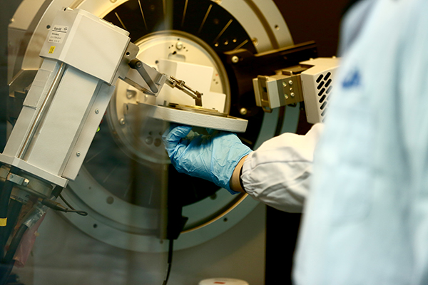

鼻咽癌治疗获新突破
2018-09-29 18:56:07 来源: 综合 作者:
中国是鼻咽癌高发地，世卫组织数据显示，我国鼻咽癌患者居世界首位。其中，广东省发病率是全国平均数的5倍多，因此鼻咽癌有“广东癌”之称。近期，这一中国高发癌症有了新的治疗手段。
中山大学肿瘤防治中心张力教授团队研究证实，国产PD-1免疫治疗药物卡瑞利珠单抗对复发转移的鼻咽癌疗效显著。9月11日，这一成果发表在《柳叶刀·肿瘤》上，显示了我国自主研发的PD-1免疫药物得到了国际认可，未来将给患者带来巨大福音。

恒瑞研发人员利用X-射线衍射仪进行药物晶型研究
国产PD-1治疗鼻咽癌效果显著
一直以来，晚期鼻咽癌以化疗为主，缺乏高效、低毒的靶向药物及新的治疗手段。在肿瘤免疫治疗大热的当下，PD-1免疫检查点抑制剂在鼻咽癌领域取得了突破，给患者带来长期生存的希望。
张力在接受新华网采访时表示，为了寻找更好的高效、低毒的治疗方案，自2016年起，他的团队针对卡瑞利珠单抗开展了两项I期临床研究，分别是卡瑞利珠单药治疗一线治疗失败后的复发及转移鼻咽癌患者，以及卡瑞利珠单抗联合一线化疗治疗鼻咽癌患者。
结果显示，单药治疗组，有34%的患者肿瘤体积缩小超过50%，总计59%的患者肿瘤得到了控制，中位无疾病进展时间达到了5.6个月;联合用药治疗组，有91%的患者肿瘤体积缩小了一半以上，100%的患者肿瘤得到控制。联合化疗组的毒性以化疗毒性为主，基本可管控。
在治疗副作用上，张力表示，卡瑞利珠单药治疗引起的严重不良反应率较低，联合化疗组的毒性以化疗毒性为主，基本可管控。
目前，在世界范围内还没有免疫治疗药物批准用于鼻咽癌适应症，为了加速卡瑞利珠单抗在鼻咽癌领域早日获批，张力团队正带领全国多家医院进行卡瑞利珠单抗在晚期鼻咽癌两线治疗后的注册临床研究及化疗联合卡瑞利珠单抗对比化疗的一线适应症研究。同时，张力团队在今年6月已启动了卡瑞利珠单抗治疗鼻咽癌II期临床研究，计划面向全社会招募150名以上鼻咽癌患者入组，目前招募患者已经超过30人，III期临床试验也即将开始。张力预计卡瑞利珠单抗会很快应用于鼻咽癌患者，届时将成为首个获批于鼻咽癌适应症的国产PD-1单抗。
“在世界范围来看，瘤种的分布有其人种差异和地域特点，我们应该发挥自己的力量，优先解决好中国人自己的高发病种。”张力教授举例说明，鼻咽癌、食管癌、肝癌等都是我国常见瘤种，但在欧美等国家相对低发，他们的研究重点也自然不会放在这些领域。“国内的研究者、临床医生、制药企业要更加关注中国的高发肿瘤。”鼻咽癌的研究就是最典型的适应中国瘤种的案例。
张力认为，解决好中国自己的疾病，能进一步为世界做贡献。张力透露，卡瑞利珠单抗治疗鼻咽癌的研究引起了全世界研究者的关注，目前正在计划开展全球性的III期临床试验，未来有望成为鼻咽癌一线治疗方案。
国产PD-1获国际认可 上市后有助提高治疗可及性
除了给鼻咽癌患者带来新的治疗希望，张力认为，卡瑞利珠单抗治疗鼻咽癌的研究结果发表在《柳叶刀·肿瘤》上也证实了国际上对于我国自主研发的PD-1单抗的高度认可。
卡瑞利珠单抗是我国拥有自主知识产权的国家I类新药，由恒瑞医药研发，能获得国际认可意义重大。“在未来一段时间内，肿瘤免疫治疗将会呈现爆发性增长。从目前国外的研究来看，以PD-1/ PD-L1为代表的免疫治疗是跨瘤种的，几乎所有瘤种都能从免疫治疗中获益。在这样的科研背景下，我国的PD-1/ PD-L1研究已经提前布局，有多个自主创新药已经进入临床试验阶段，正在努力追赶国际水平。我们在免疫治疗领域并没有落后太多。”张力推测，近两年将会有多个国产PD-1/ PD-L1新药获得审批。
国产免疫治疗药物进入市场的另一重大意义在于能降低药价。目前，我国已经上市两款进口PD-1药物，对很多普通收入水平的患者家庭来说仍是“天价”。张力表示，国产药物的价格一定会优于进口药，在医保谈判时能显出优势，可尽快纳入医保。“从目前的研究结果和试验数据来看，在免疫治疗领域，国产药物与进口药物差别不大。而国产免疫治疗药物在价格上的优势能提高药物的可及性。”张力表示。
注重PD-1联合用药研究 提升肿瘤治疗效率
卡瑞利珠单抗是恒瑞医药自主研发的创新药，据恒瑞医药副总经理、首席医学官邹建军介绍，恒瑞在2016年4月开始了卡瑞利珠单抗的多项临床研究，并在I期临床试验中拓展了适应症，鼻咽癌正是拓展的适应症之一。截至8月底，恒瑞针对卡瑞利珠单抗已经开展了20项临床研究，有1600名患者参与，包括肺癌、肝癌、胃癌、食管癌等多种中国高发瘤种。
邹建军认为，PD-1/PD-L1单药使用的情况有限，更多是联合其他抗肿瘤药物使用，PD-1/PD-L1更像是一把提高肿瘤治疗效率的钥匙。
“恒瑞的特色是抗肿瘤药产品丰富，包括化疗药、靶向药、抗血管生成药等，与PD-1/PD-L1联合使用可以发挥更大疗效。我们也正在开展多项PD-1单抗的联合用药研究。”邹建军介绍。